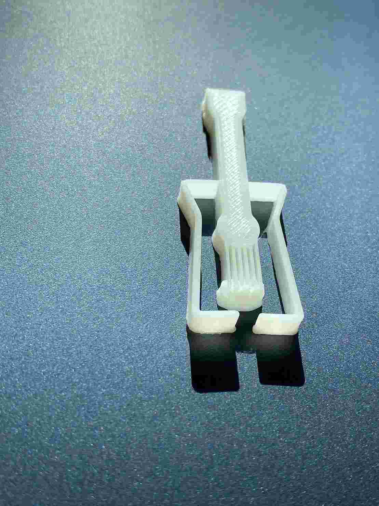
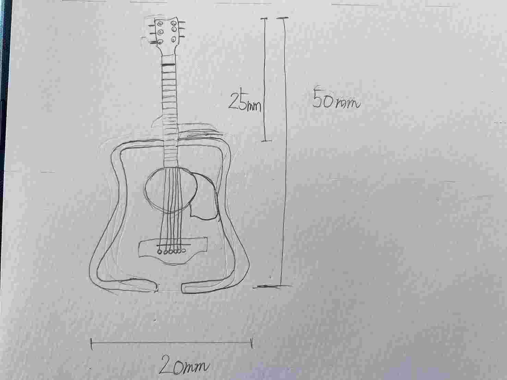
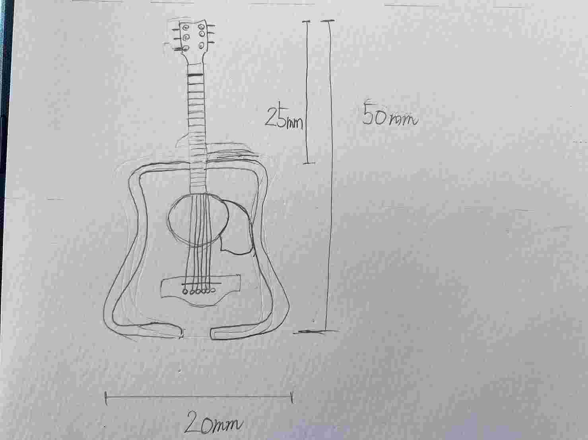
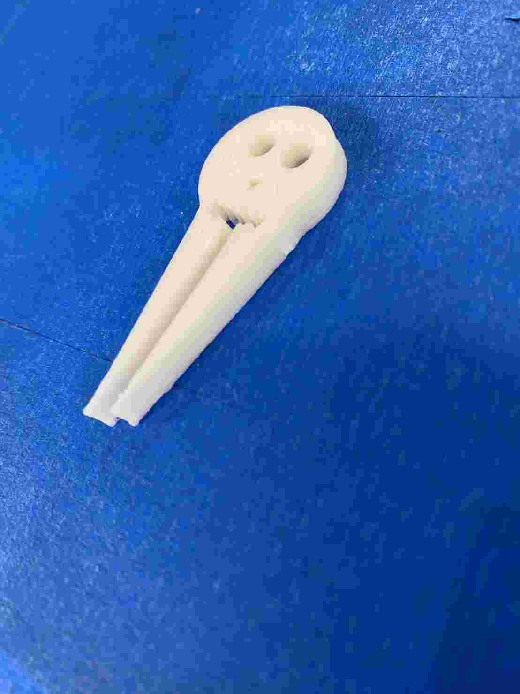
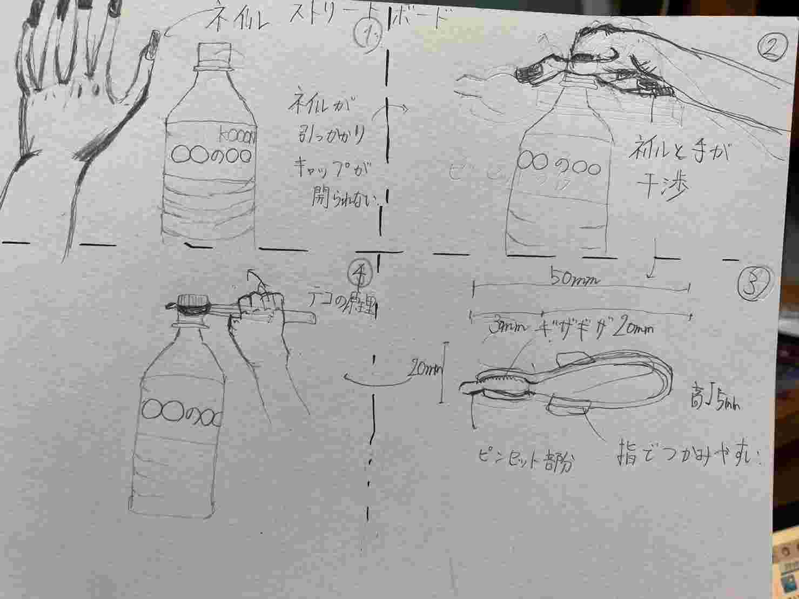
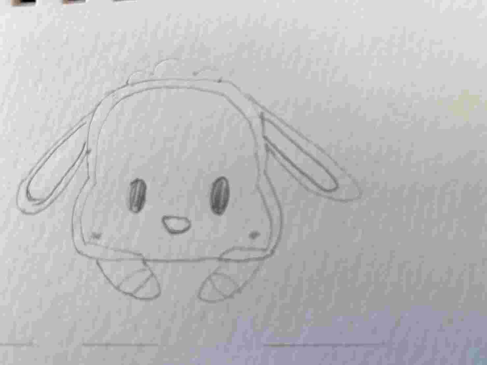

【ピンセットの進化】～飾れるピンセット～
1.〖作品のタイトル〗
ピンセットとギターを融合したギター型ピンセット>を3Dプリンターで作成しました。2.〖使う目的〗
飾っていインテリアとして使う
自分の部屋の模様替えで配置を変えて空間が開いた場所にインテイアを置こう
ちょうどいい。作ってみよう！！！！
＜完成品＞

設計図はこのようになりました。
 
製作途中の動画
STLファイル〖mark6〗
今回最終的なギター型ピンセットの改良前の作品
3.〖作品の説明〗
ギターの下部分を開け摘まめるように設計しました。
ギターは瓢箪のような形をしているので下部が大きく摘まむのが窮屈にならないと考えました。
〖作成の経緯〗 ギター型を作った経緯はギターを趣味として弾いたことがあるからです。 また、ギターはインテリアとしても部屋をおしゃれに彩る役割を果たしてくれると思っい作りました。
4.〖惜しくも課題の作品に選ばれなかった作品〗
一番最初の作品お化けのピンセット
- STLファイル

ペットボトルオープナー
失敗を基に角度をつけたペットボトルオープナー
- STLファイル
- STLファイル
試作品として最初にペットボトルオープナーを作ってみました。
こちらが、ストリートボードです。

その後、キャラクターに挑戦しましが設計だけでfusionでは作りませんでした
こちらが設計図です

試作は主に女性でネイルをしている人のためにペットボトルオープナーを作りました。 姉がネイルをしておりペットボトルを開けることができずいつも頼んできて大変だったので作る経緯に至りました。
しかし、実際に作ってみたところ引っ掛かりが少なくてペットボトルを開けることができませんでした そこでギザギザを追加して引っ掛かりを作りましたが結果は同じで開けることができませんでした。 自分の設計がいけなかったのかスケールの問題は定かになりませんでしたが、 今回は失敗のまま終わりました。
※これにより、私の使命は姉のペットボトルを開けることになりました。